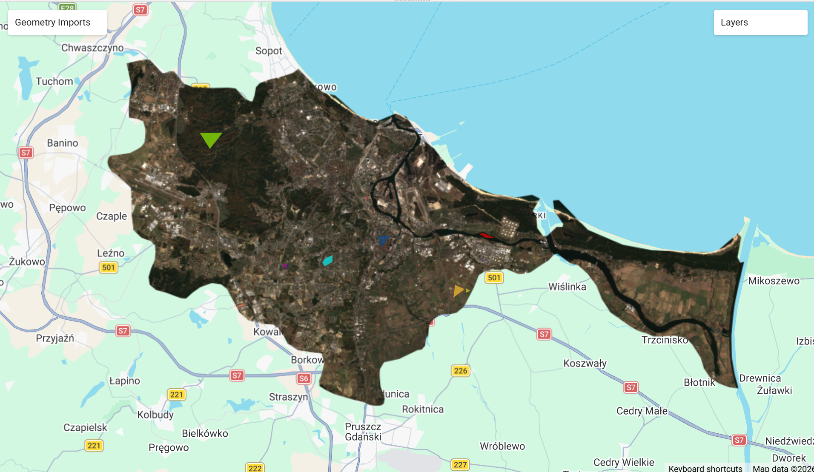
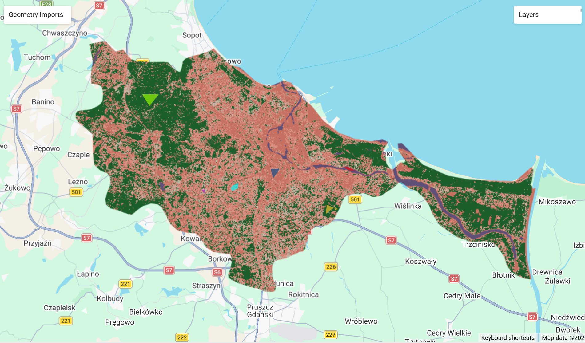
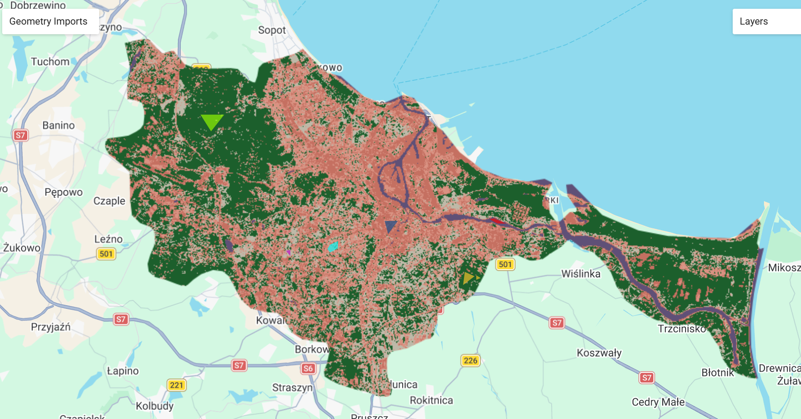

7 Week 7: GEE Classificaiton I
7.1 Summary
This week we spent more time in GEE covering ways of working with classification algorithms, dealing with cloud coverage and using the GAUL dataset of administrative boundaries which means even less need to import in data into GEE.
An introductory concept I found useful to think about when reading about classification was considering crisp vs soft classification described in Jensen (2015).
This is the idea that classification algorithms can work with hard or crisp separation between categories, e.g. pixels attributed to forest or agriculture.
Whereas a more fuzzy or soft classificaiton logic acknowledges there may be a more gradual change of land cover, as we know the earth’s landscapes are heterogenous. So a fuzzy classification produces a kind of estimate of multiple categories assigned to a pixel e.g. 10% water, 90% forest.
Both of these can be applied to various supervised and unsupervised classification methods.
7.1.1 Supervised, Unsupervised and Object-based Classification
| Classification | Definition | Methods |
|---|---|---|
| Supervised | Assumes a priori (before) knowledge of the type of land, though fieldwork, aerial photography or map analysis. Pattern recognition from the training data provided for the algorithm to learn and classify an area. | Parallelpiped, CART, SVM, Random Forest |
| Unsupervised | Identities of the land are unknown before, an algorithm takes the remotely sensed data and clusters areas, for example based on band information. The algorithm also labels the classes provided. | DBSCAN, K-means clustering, ISODATA, |
| Object-based classification | Used to extract homogenous polygons of information from RS data instead of thematic information in pixel format. It does this by segmentation of the image, breaking it into objects. Then it classifies these objects using their shape, size, spatial and spectral properties. | GEOBIA |
Supervised classification can also be parametric, or non-parametric depending on whether the data we’re working with is distributed normally (parametric) or not (non-parametric).
The general process for classification of remotely sensed data can be summarised in the following steps:
- Gather RS data and process/correct if necessary
- Select appropriate image classification logic
- parametric or non-parametric
- hard or soft
- Select image classification algorithm
- Supervised or Unsupervised
- Hybrid
- Object-based
- Narrow down information for classification
- Specific Bands
- Statistical information
- Extract training data
- Find areas of interest to classify (supervised)
- Extract thematic information
- pixel or object based (supervised)
- Label the pixel or image object (unsupervised)
- Evaluate the accuracy and analyse errors
7.1.2 CART
Classification and Regression Trees (CART) is a common way of classifying data. Classification trees are a good way of classifying data into discrete categories, while regression trees can work with continuous variables.
The way both of these work is by reducing the ‘impurity’ of our classes, this is also called Gini impurity.
Imagining a tree, starting at the root with all of our data, the classification takes place when data is split based on whether it belongs to one class or another.
When running tree algorithms for classification it is important to prevent overfitting i.e. creating to many branches and nodes that learn the existing dataset and fail to be generalisable to unseen data. We can do this by ‘pruning’ which is limiting the number of branches.

7.1.3 SVM
Suppor Vector Machine algorithm is a way of classifying the data by creating a maximum margin between two groups of training data (maximum margin classifier). It works by finding the best split boundary across a ‘hyperplane’ that separates categories of data.
Personally the best way of understanding this was with visual aids such as the ones below.

Although there may be some overlap between the classes it will depend on the tolerance for mis-classification that is allowed within the context we’re working with.
Therefore there are some limitations with using SVM for noisy datasets where largely overlapping classes can cause issues. Thinking about this in the context of my work at Brent Council I think the interpretability of SVM suffers somewhat compared to CART where the tree visual can be a really helpful aid for non-technical stakeholders.
7.1.4 Limitations
Using classification for forecasting into the future can have its pitfalls, there is definitely a risk if the training data provided is not representative. If the classes we’re working with are not easily separable it can be difficult to apply algorithms like SVM. There is definitely also more that I have to learn about evaluating the accuracy of classification models to better understand their limitations but based on my initial understanding of machine learning from using algorithms like XGBoost on non-spatial data, having unbalanced classes can be a big problem. Having the ability to forecast/predict instances which are rare remains difficult.
7.2 Applications
For the practical this week I revisited the city of Gdansk, and completed the practical using this. It was much easier taking advantage of the GAUL database of administrative boundaries, and being able to inspect the map to find the code of the area I needed to clip.
First dealing with cloud coverage, there are two useful ways of filtering cloud coverage within the satellite metadata provided, or creating our own cloud cover mask based on the Quality Assurance Band provided in Sentinel data. Then creating a median image of our image collection and clipping it to the city of Gdansk I was able to start to draw my training dataset of polygons using GEE.

Once the data from the training polygons is defined we can use the SampleRegions function in GEE which converts each pixel of an image (here each pixel at a 10m scale) within the defined training polygons, and creates a FeatureCollection for the pixels and their band information. In the image below I’ve used the CART classifier.

We also had the code available to run a Random Forest classifier on the same dataset and it was interested to see it generate a more accurate classification, just based on an initial look, the water here is much more defined.

This is because unlike CART, the Random Forest algorithm works with many decision trees, and uses bootstrap sampling (i.e. taking the same data and using it multiple times to find the best split of data by minimising Gini impurity). This can also be explained using the concept of bagging, which is taking 70% of training data (70% of the 70% we initially use for training) and testing each random forest tree with the 30% of unseen training data (out of the bag data) to validate the results of the trees and minimise error.

I thought it was interesting to compare this initial attempt at classification with a more well developed project which I read about relating to mapping urban forests across China.
This paper by Duan et al. (2019) used GEE and Random Forests to classify urban forest distribution across China. I think the main benefit of a study like this is the ability to include both ground point data as well as high resolution images from Google Earth and over 5482 images from Sentinel. There were 75 ground sample points collected as well as over 3000 samples of urban forests used to train the algorithm. However, they also found the 10m resolution of Sentinel data was too coarse for accurately classifying urban forests near densely built up areas.
Although I think the paper also has a somewhat loose definition of ‘urban forest’ which can include “all woodlands, groups of trees and individual trees” (Duan et al. (2019)) it is still an impressive demonstration of a classification algorithm working across a large national scale.
7.3 Reflections
Over the last few weeks of learning and reading it seems like there are still challenges to accurately classifying dense urban areas, and especially identifying green spaces within these. As explored by Kadhim, Mourshed, and Bray (2016) the spectral complexity of urban spaces, due to their variance and mixed materials used is still difficult to classify without higher resolution data. Pixel generalisation can be problematic when working with lower resolution data. The research on urban forests also states that “the most common mis-classification is between buildings and urban forests” where in cities trees grown next to rows of buildings and can be really important as urban forest spaces they may not be fully captured.
However for a study that was able to capture the extent of most of the urban forests across urban settings in China, the speed and scale at which GEE can work remains impressive.
Taking the limitations on board, I would be really interested to work with more high resolution imagery to see how it could improve the classification of cities like Gdansk or even at a lower London Borough level, would high resolution imagery make a substantial difference in the accuracy of an algorithm like RF. This is something we’ve been discussing at Brent, and whether one-off purhcases of high resolution imagery that could be used for various purposes across service areas would help spread out the cost. First however, it would be key for me to create a business case and proof of concept, which I can see GEE being really helpful with.